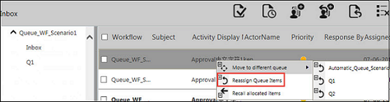

No
Queue Multi Select
The queue multi-select feature allows you to select multiple queue items. You can pick the queue items from the work item Inbox and assign them to actors. You can plan the queue items so that they are scheduled for the time specified and assigned to actors once the time elapses. You can also recall already allocated items so that they get back to the respective queues.
Showing the multi select capability for the Queue item tasks in Work items list control is controlled by the Work item list Control Property - EnableMultiSelectByDefaultForQueue. Based on this property, the set user can control the visibility of the multi-select check boxes for the queue view.
If the property EnableMultiSelectByDefaultForQueue is set to False for the Work items list control, then the queue multi-select option is controlled by the DisplayGroupUI property of the Work items list control. On click of the Enable Multi Select icon, check boxes will be enabled for selecting multiple queue items.
The following image shows the Queue multi-select option in Work items list control:
Note: The options for performing queue operations are displayed in the Inbox, based on the runtime access rights defined for a role in Queue Management. For more information about setting role priority, see Set Role Priority.
Reassigning Queue Work Items
This option enables you to reassign queue work items through the context menu. Also, the scenario of reassigning multiple queue work items is achieved by clicking Reassign Queue Items in the multi-select mode.
Reassigning of queue work items functionality is achieved through the context menu of the queue work items list.
The following image shows reassigning queue work items:

Multiple reassigning of queue work items is achieved by clicking the Reassign Queue Item button with the multi select mode enabled.